ProjectNight.com
Wednesday Night Project Night, Page 1
Most recent Project Night followed by the previous Wednesday's, for this page....
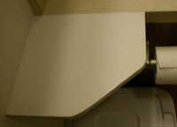
28 March 2007A project was completed! That is it on the left. It is a small 9 inch corner shelf that required three cuts on the table saw. Is that not a nadir of projects, or what? And it is a good thing it got done before the yakking about musical instrument construction started. That was followed by yakking about floating islands, then yakking about Juneau snow conditions, sail boats, of all things, and the superlative selection of wine at Project Night. Some crackers, gourmet cheese, slices of moose roast, and Gamel Dansk for flavor magnification. Work on the house continued. Plans were made for ah, a secret project, of course. Oh, the white board for that corner shelf was picked up at a dumpster several years ago. I knew it would come in handy some day.
Hey, this report was written a subsequent evening, by the web slave sitting on a display snow machine inside the airport, waiting to pick somebody up. A tourist with a cell phone camera came up to the web slave, and asked if she could take his picture, stating that he presented the classic Alaska image. So if you want to see the classic Alaska image, you gotta go find that tourist with the cell phone camera. The tourists know the Alaska image.
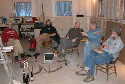
21 March 2007Well, yes, still working on the elk antler coat rack project. Some projects only get worked on at Project Night. You might notice the nature of the production techniques employed at Project Night.
The computer was used for a DVD of early Fairbanks Alaska winter aviation movies, followed by a helicopter ride with a film guy, over the terrain filmed during the Lord Of The Rings. Wow. Not much production on the other projects. Get a copy of that helicopter ride film. The web slave will upload the name of it when his copy arrives so he can see what he ordered.
The Juneau report mentioned the current snow load and record avalanche hazard. Big time hazard. Juneau is at the bottom of everything coming down off the hills. Hopefully the politicians are still there, for a benefit from any disaster.
14 March 2007
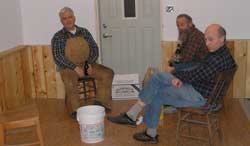
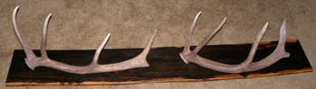
Those guys are looking at the bucket of bottles of beer, common at Project Nights. Buckets have handles.
That wood around the side of the room where those guys are sitting drinking beer is the primary project that night. Fresh finish.
Oh, those elk antlers on the Zicote wood board, to be the coat rack at the prestigious Alaskan Alpine Club World Headquarters and Rabble Rousing Institute, are another project advanced on this project night.
Besides the exact formula of Watco finish oil, Verithane, Japanese Dryer and bizarre thoughts that make the best wood finish, the evening discussion traversed the details of house boat living room center areas open to the sea water, where seals sometimes come up. Somehow the topic of frozen pipes also came up. March 2007 will be recorded in local history as the time the most number of Fairbanks area houses had frozen pipes between wells and houses. Scant snow for insulation. Prolonged cold. The frost level even reached the water table in some areas. But the web slave got his well pipe thawed the next day, and again the following morning. Apparently somebody is messing with the Global Warming Thermostat again.
Besides the Wednesday Night Project Night that will be happening in Juneau, when the project night shifts down there, there is discussion about whose local shop will host the Fairbanks Wednesday Night Project Night, when the current Project Night shop and house are sold. Hmmmm. If you know a shop person looking to buy a house in Fairbanks, when it is finished, that has a small shop building, and has an established history of Project Night to slow shop projects, the web slave will pass the message to the house owner.
7 March 2007
Project night on schedule again. But the schedule will soon change locations. The whole shop is in a big truck trailer driving south to Juneau Alaska, of all places. Well, the politicians that hang out in the Capital city need a lot of reworking.
Expect great things on this website when all things are in order in the future, under sail and the new captain is at the helm.
The Fairbanks shop therefore bare, the Wednesday night project involved a certain selection of truly fine wines and gourmet food, with stories of sail boats and house boats. An 04 Fedelitas Syrah and 02 Sandhill Cab should be brought from the wine hold upon their discovery.
The concept of logic and its relationship to the data base of any individual or group of individuals, or the impartial universe holding all data therefore defining flawless logic, as related to effective conveyance to school age persons and the traditionally hopeless adults, was pontificated upon to the extent that the data base of the individuals involved was somewhat extended. Some projects nights are more educational than others.
Keep your seat belts fastened, unless turbulence offers a more exciting ride.
January 2007
Delay Report #2... Web slave still down south, working on a floating island project. Patience.
A little delay in the reports, on account as some of the various sorts have traveled to various places. But check back in a month or so. In fact, if you have a good interim report of a project night, send it to the web slave, with a couple photos, and he just may upload the report.
15 November 2006
Beer, pickled pike, and that is it. Somebody jerk the chain on the Hor de ourves Steward.
Sailboat stories. Phone conference with the BlackMast.net Captainess, on boat in Juneau. Much snow was shoveled off the deck.
Caving stories. Secret caves. Secret stories. Not believable anyway.
Government construction project materials management (unmitigated waste), was discussed.
Tools returned from lacewood shelf project. Shelves display gnomes, a nebbish, fossil bones, an old purple glass cruet, and such usual stuff cluttering homes.
Camera guy remembered the camera...
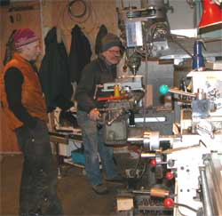
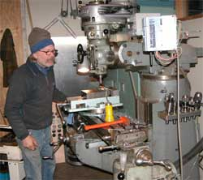
Metal
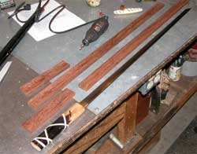
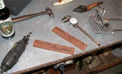
Brazilian rosewood Zatochi sword scabbard and handle.
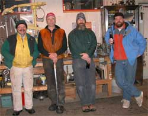
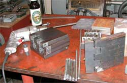
The Usual Suspects.
And the mondo steel door hinges for a little cabin door, still in progress.
Hey, Alaska grizzly bears rip normal cabin door hinges off in the middle of the night, walk in and eat people before they even have time to wake up.
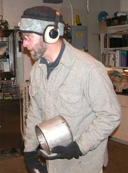
In hand is the stainless steel, grinder quenching pot, finished this week. Normal people just use an old coffee can. Whatdaya mean coffee comes in plastic now?
8 November 2006
Varied beer, 2 superlative scotches, crackers, cheese, and things.
Camera guy forgot the camera. 20 degrees below zero F outside.
A domed round 11 inch diameter all-sky aurora camera glass window showed up, from a surplus acquisition, for a cabin front door window, to be backed with a stained glass piece.
Stories:
Dumpster diving: 50 life vests grabbed by parent of kids who wanted them. They will show up again. Early style ammo can with old 30-06 ammo set on the recycle platform by a classic little old lady. Boxes full of new radio tubes from a previous era were acquired at the dumpster site, and brought to Project Night, for the old amp guy.
Misc: Successful ptarmigan hunting, with rocks. Recent pheasant hunting in central Washington, and trip across North Cascades pass, and related Lewis and Clark Expedition stories.
Projects:
Mondo door hinges of three quarter inch thick steel, with a precision bearing insert, for heavy iron decorative door plates, were in progress on the vertical end mill.
A stainless steel quenching bucket, for a grinder, was mostly cut. Yet to be welded. Most people just use an old coffee can, but these machinists often get fancy.
A wood stove design, not on the market and in high demand, was discussed. Sometimes the discussion is the project. Money maker. Let us know if you make one. Very simple basic, high quality wood stove for emergencies. Rectangular, maybe 14 inches wide, 16 inches high, 24 inches long. Nothing fancy. Minimal space design. Primary criteria: One person must be able to conveniently bring the parts from the garage, and efficiently assemble it under the capped chimney when it is 40 degrees below zero and the electricity goes out. Then take it back apart and put it elsewhere, in the garage or just under a corner TV stand, in the spring. Basic box of maybe 3/16 inch steel, without top. Top with deep channel on edges, to slip over box sides and ends, seated with glass rope, attached with front and back edge pins. Half inch thick steel plate inserts for bottom, sides, ends and top for heat sink mass and longevity, put in place with slots and ledges. Perhaps a near-top baffle plate. Bars on ledges, for the wood, above the close fitting ash pan. Every piece with low profile handle for ease of handling, of convenient weight for one person. Rear end stove pipe hole. Pin hinge door. Low profile slider front draft. Short square tubular steel legs inserted in meshing square tubular steel welded to bottom corners.
A cross grain block design drawer front was finished, somewhat.
Tools were borrowed to make some beautiful Lacewood shelves at another location. Doug, do not forget the jack plane and belt sander next Wednesday.
Discussions:
Comparison of statute miles, a king's decree, with nautical miles, based on one degree at the equator, and geographic miles, based on a division of longitude, if I remember that correctly.
Ice sculptures. Properties of water soluble cutting oil.
Recent election. Rummy got handed his ass. Alas, the DemocanRepublicrat Regime was re-elected, assuring more of the same deteriorating rights, freedom and ownership of one's own money, as usual.
Dat's it for da report. That is what happened on this Project Night.
1 November 2006
First report for this website. Chisel that into the annals of project nights rumored to have been first reported in Egyptian hieroglyphics on secret room walls yet undiscovered in buried pyramids.
Varied beer, Gamel Dansk, chips, dip, sausage, pickled beans and things.
Few projects, much discussion.
One of the evening projects was a small art item made of 5.4 million year old semi-lignitized wood found at a secret location in previous permafrost in the Alaska Range.
Alaska was previously warmer, with bigger animals and more forest. Vote for global warming. Bring back the mammoths.
Ooops. That comment already got a complaint from the (California) Ice Climbers For A Nuclear Winter. They oppose global warming. But global cooling follows global warming. The ice climbers will get their ice age, nuclear or natural.
The working characteristics of 5.4 million year old lignitized wood: Very dense wood, heavy, high luster. Sort of hard clay-like working texture, with some wood characteristics. It has some compression induced flaws, but mostly well bound.
Various pieces range from dark brown to black. Some specimens of the wood have adequate flawless areas. Some testing and discussion suggest that the material is ideal for moderate heat application. The wood volatiles have been chased away with the long duration of significant compression in an initially moist environment. The partial carbonization has produced a surface that cannot be easily volatilized by low flame or heat. There are more significant art items that will benefit from this high luster nearly black hard wood, of superlative conversational value.
Page 2 April 07 -------- June
07
Page 3 July 07 --------- October
07
Page 4 October 07 ----- December
07
Page 5 December 07 -- February
08
Page 6 February 08 --- March 08
Page 7 March 08 ------ October
08
Page 8 October 08 ---- January
09
Page 9 February 09 --- November
09
Page 10 November 09 - Present